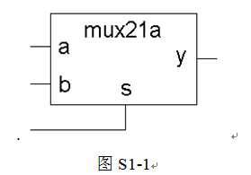
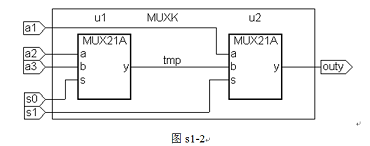
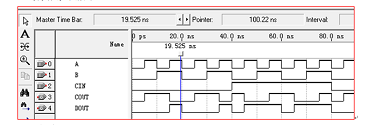
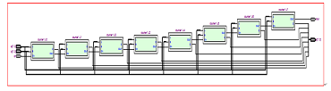
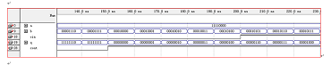
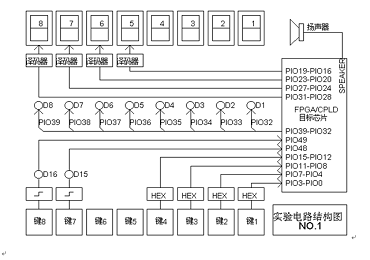

1.熟悉QuartusⅡ的VerilogHDL文本设计流程全过程，学习简单组合电路的设计、多层次电路设计、仿真和硬件测试。
2．加深FPGA\CPLD设计的过程，并比较原理图输入和文本输入的优劣。
1．GW48EDA/SOPC+PK2实验系统
1．首先利用QuartusⅡ完成2选1多路选择器（如图S1-1）的文本编辑输入(mux21a.vhd)和仿真测试等步骤。最后在实验系统上 进行硬件测试，验证本项设计的功能。
2．将此多路选择器看成是一个元件mux21a，利用原理图输出法完成图s1-2，并将此文件放在同一目录中。
编译、综合、仿真本例程，并对其仿真波形作出分析说明。
最后在实验系统上进行硬件测试，验证本项设计的功能。引脚锁定方法选用模式5，与上次操作方式类似，自己安排。
3．以1位二进制全加器为基本元件，用例化语句写出8位并行二进制全加器的顶层文件，编译、综合、仿真本例程，并对其仿真波 形作出分析说明。最后在实验系统上进行硬件测试，验证本项设计的功能。
(1)1位加法器
assign COUT=A^B^CIN;
assign DOUT=A&B|A&CIN|B & CIN;
仿真图如图所示：
（2）8位加法器
module counter(a,b,cin,q,cout);
input [7:0]a,b;
input cin;
output [7:0]q;
output cout;
wire[6:0]co;
counter1 U0(a[0],b[0],cin,q[0],co[0]);
counter1 U1(a[1],b[1],co[0],q[1],co[1]);
counter1 U2(a[2],b[2],co[1],q[2],co[2]);
counter1 U3(a[3],b[3],co[2],q[3],co[3]);
counter1 U4 (.A(a[4]), .B(b[4]),.CIN(co[3]),.Q(q[4]),.COUT(co[4]));
counter1 U5 (.A(a[5]), .B(b[5]),.CIN(co[4]),.Q(q[5]),.COUT(co[5]));
counter1 U6 (.A(a[6]), .B(b[6]),.CIN(co[5]),.Q(q[6]),.COUT(co[6]));
counter1 U7 (.A(a[7]), .B(b[7]),.CIN(co[6]),.Q(q[7]),.COUT(cout));
endmodule
综合电路图：
仿真图：
管脚锁定：选择模式1，按键1~4作为计数器按键输入，每按一次1，数值加1。数码管8~5通过译码器由4个管脚输入产生相应的0~F等16个数值。
输入A、B高低位对应接按键1~4对应管脚；cin可以锁定键7或键8；输出管脚q可以锁定两个数码管对应的管脚，如PIO31~28 ，PIO27~24；进位输出cout可以选择D8~D1发光二极管对应管脚。
七段数码管译码器（Decoder）的输入为4位二进制代码，输出为7个表征七段数码管代码的状态信号。
4．七段数码管译码器（Decoder）
编译、综合、仿真本例程，并对其仿真波形作出分析说明。最后在实验系统上进行硬件测试，验证本项设计的功能。
应选择模式6下按键8、键7、键6、键5对应4位二进制数。管脚锁定自己确定。
1.恰当选择电路结构，完成上述实验连线。
（1）对于原理图设计要求有原图。对于VerilogHDL语言设计要求有源码。
（2）详细论述实验步骤。
（3）详细论述仿真步骤，并作出仿真结果。
（4）附加：可以将加法器与数码管联合编程设计adder_seg7进行硬件测试。